We headed to Malta in 2014 for a friend's wedding and stayed for a full week — and what a week it was. A proper island tour taking in Valletta, Mdina and the stunning coastline, a day trip across to the gorgeous island of Gozo, a talcum powder massage that needs to be experienced to be believed, and happy hour done properly in the Mediterranean sunshine. The weather was incredible, the people were warm and friendly, and Malta completely won us over.
What this trip gave us:
The story
We arrived in Malta in 2014 for a friend's wedding — and quickly decided that a few extra days were absolutely in order. Malta is tiny but it punches well above its weight. Within the space of a week we managed to pack in an awful lot and still felt like we had barely scratched the surface.
The island tour was one of the best decisions we made — it is genuinely the best way to get a feel for Malta and understand just how much history is crammed into such a small place. From the baroque grandeur of Valletta to the medieval silence of Mdina, the ancient temples and the dramatic coastline, every stop delivered something different and brilliant.
The talcum powder massage was an experience entirely its own — unusual, memorable and something that has been talked about ever since. Not to be missed.
And then there was Gozo. The short ferry crossing from Malta takes you to what feels like a completely different island — greener, quieter and with a charm all of its own. It is absolutely gorgeous and a day trip there is one of the highlights of any Malta visit.
The weather was brilliant, the food was great and the people were some of the friendliest we have encountered anywhere. Malta is a very easy place to fall in love with.
One of Europe's great small capitals — a UNESCO World Heritage Site packed with baroque architecture, grand churches, harbour views and brilliant cafés.
The ancient walled city perched on a hilltop — narrow streets, centuries of history and an atmosphere unlike anywhere else on the island. Magical at dusk.
The impossibly turquoise waters of Comino's Blue Lagoon are as beautiful in real life as they look in photos. One of the most stunning spots in the Mediterranean.
Quieter, greener and absolutely gorgeous — a short ferry hop but a world away from Malta. The cliffs, the countryside and the relaxed pace make it a brilliant day out.
A uniquely Maltese experience — unusual, wonderfully relaxing and something you will be telling people about long after you get home. Absolutely worth trying.
Malta does happy hour properly — cold drinks, warm evenings and that brilliant Mediterranean atmosphere that makes you want to stay just one more day.
The island
From the grand harbours and baroque churches to the ancient streets and dramatic coastline — a glimpse of what makes Malta so special.
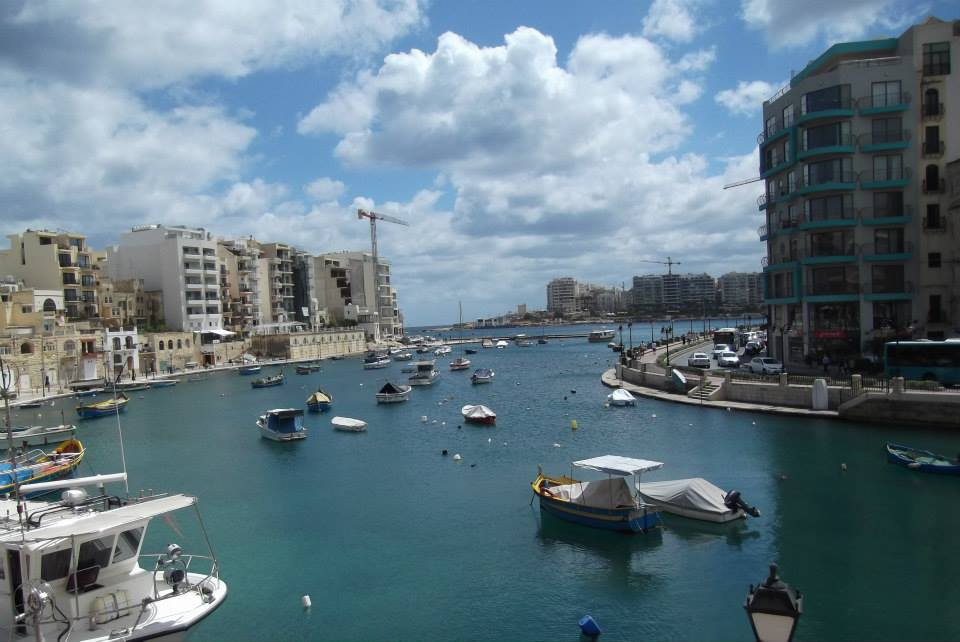
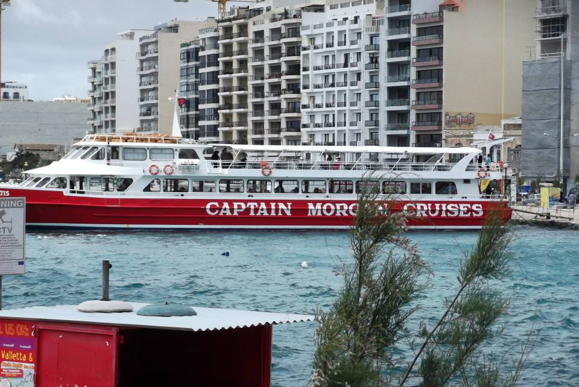
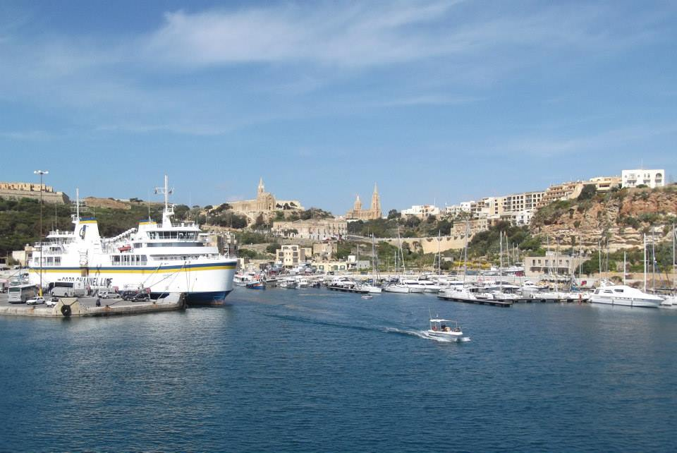
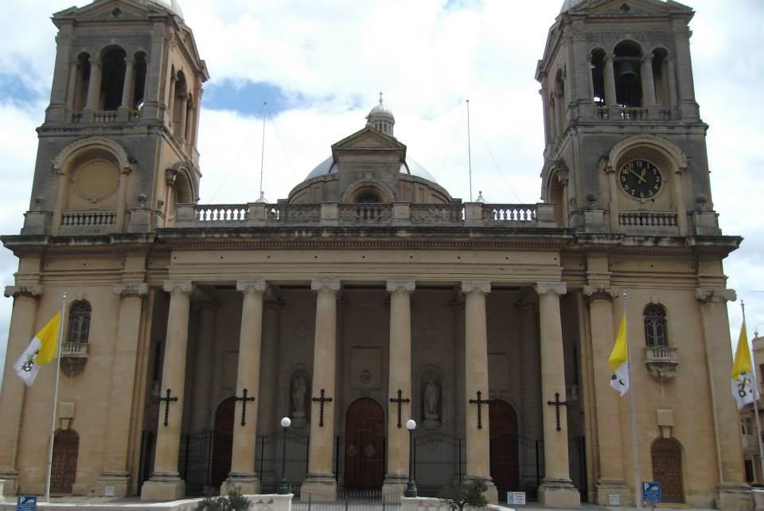
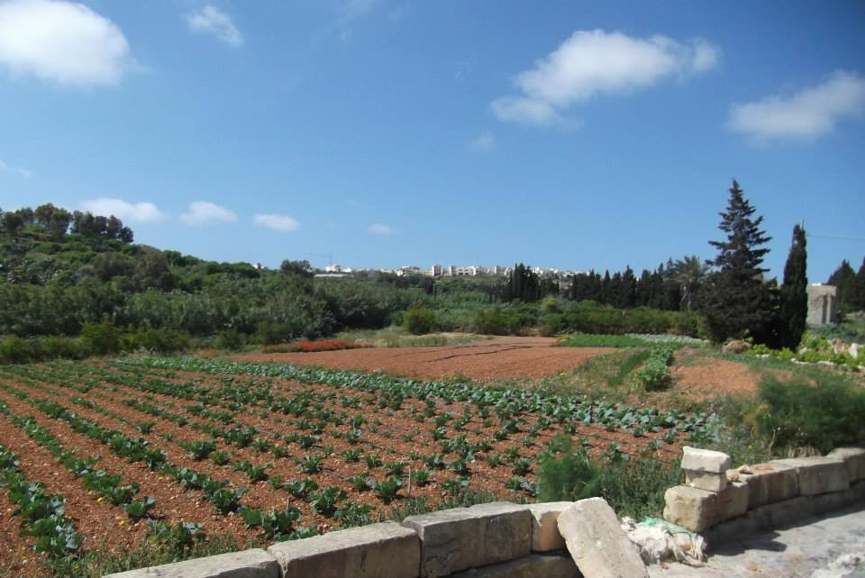
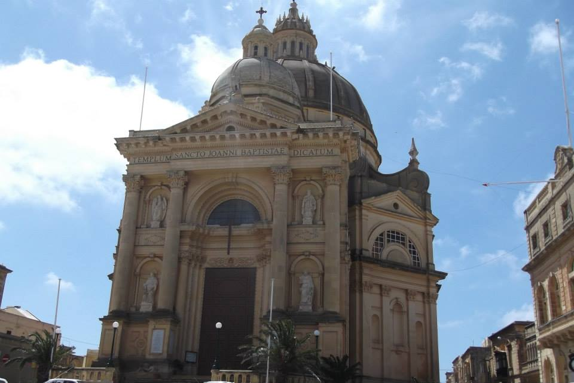
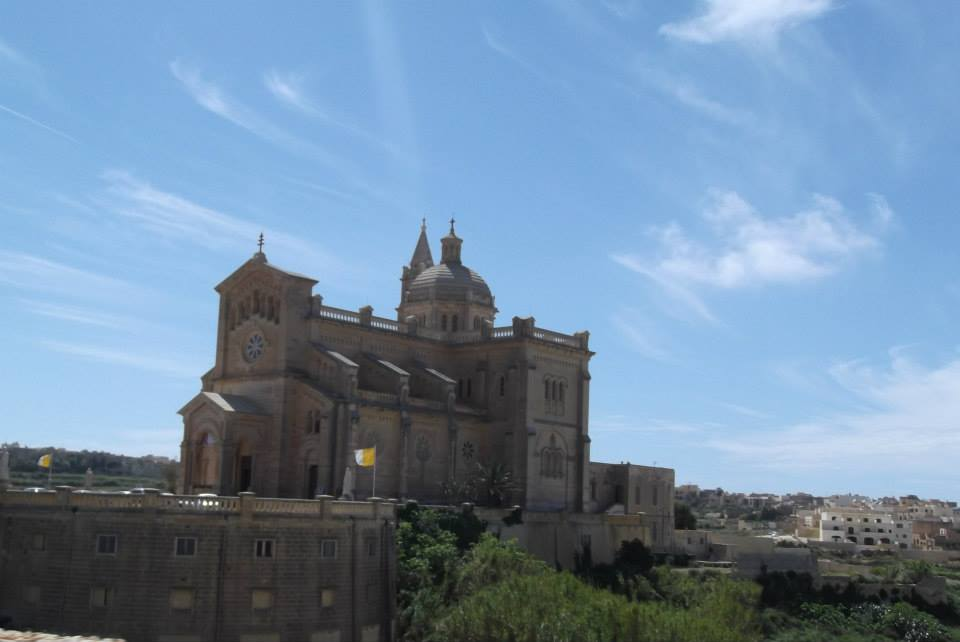
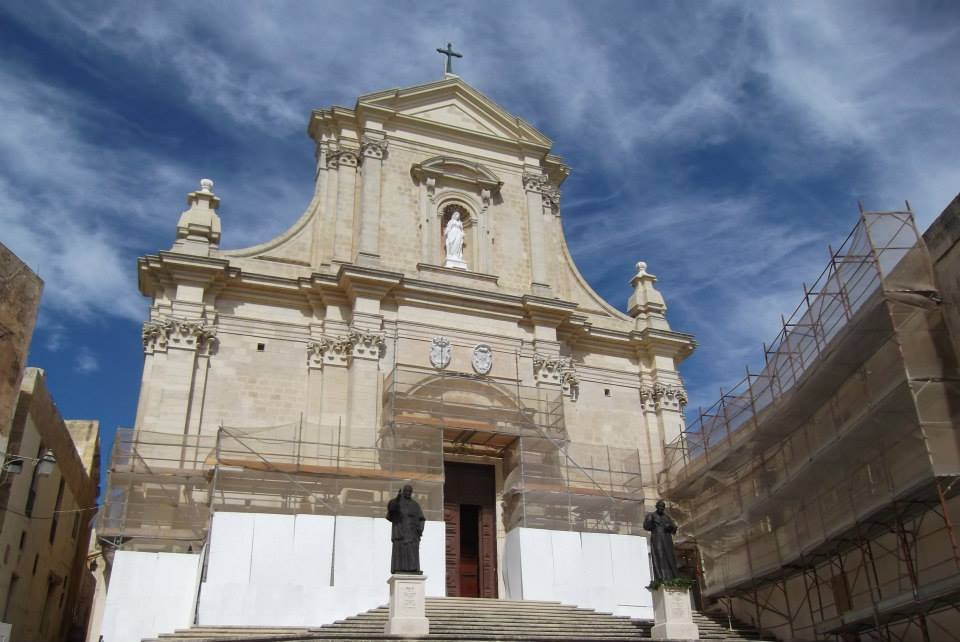
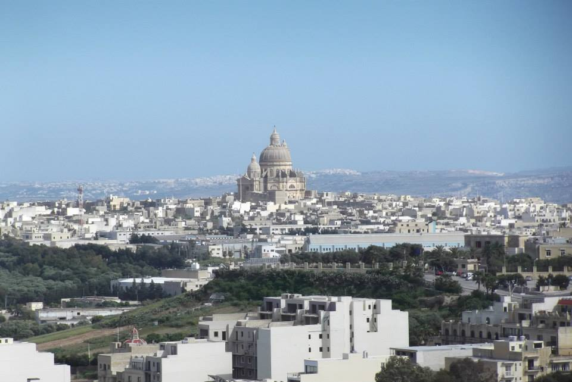
Want to explore Malta and Gozo with everything taken care of? TourRadar has great Malta tours to suit every style of trip.
Malta is small but there is a lot to pack in — having the logistics sorted means you can focus on the good parts. From Valletta and Mdina to Gozo day trips and the Blue Lagoon, a guided tour is a brilliant way to make sure you see the best of the island without spending your holiday planning it.
Disclosure: This is an affiliate link. If you book through it we may earn a small commission at no extra cost to you.
Blue Lagoon boat trips, Valletta tours, Gozo day trips and the best of Malta — often cheaper than booking at the door.
Disclosure: If you book through these links we may earn a small commission at no extra cost to you.
From island tours and Valletta walking tours to the Blue Lagoon and beyond — browse Malta activities here:
Disclosure: If you book through these links we may earn a small commission at no extra cost to you.
The sister island
If Malta is the busy, history-packed big sister, Gozo is the quieter, more laid-back sibling — and she is stunning. A short ferry crossing from Malta brings you to an island that feels completely different in character — greener countryside, dramatic cliffs, a slower pace and a beauty that genuinely takes your breath away.
The cliffs along the coast are spectacular, the little villages are charming and the whole island has a warmth and tranquillity that makes you want to linger longer than a day trip allows. It is one of those places where you arrive thinking you will do a quick look around and end up wondering why you did not book more time here.
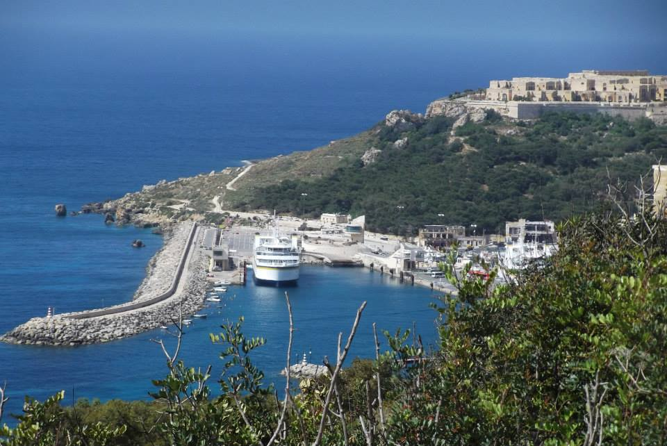
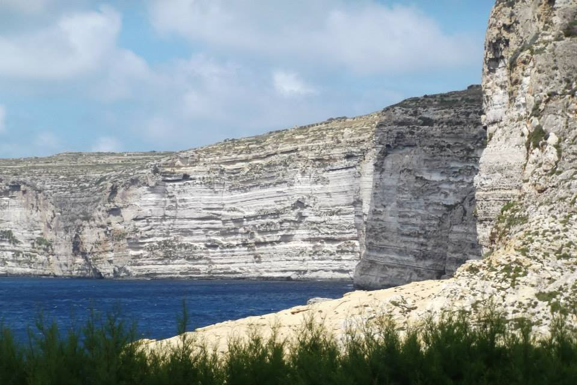
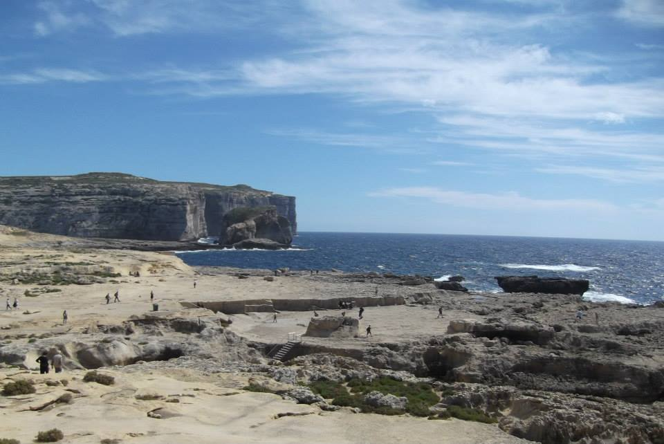
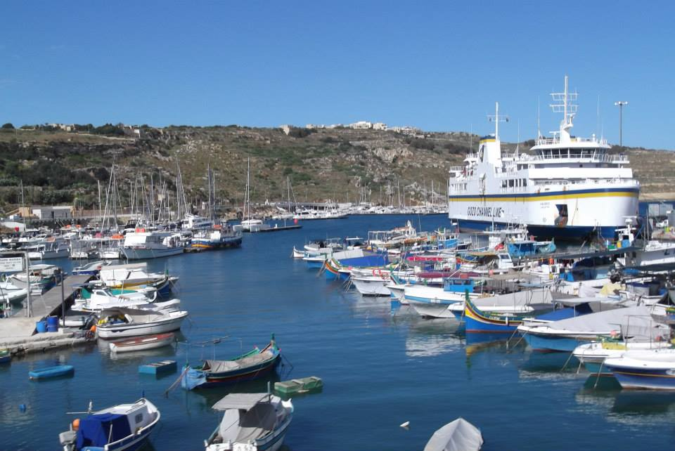
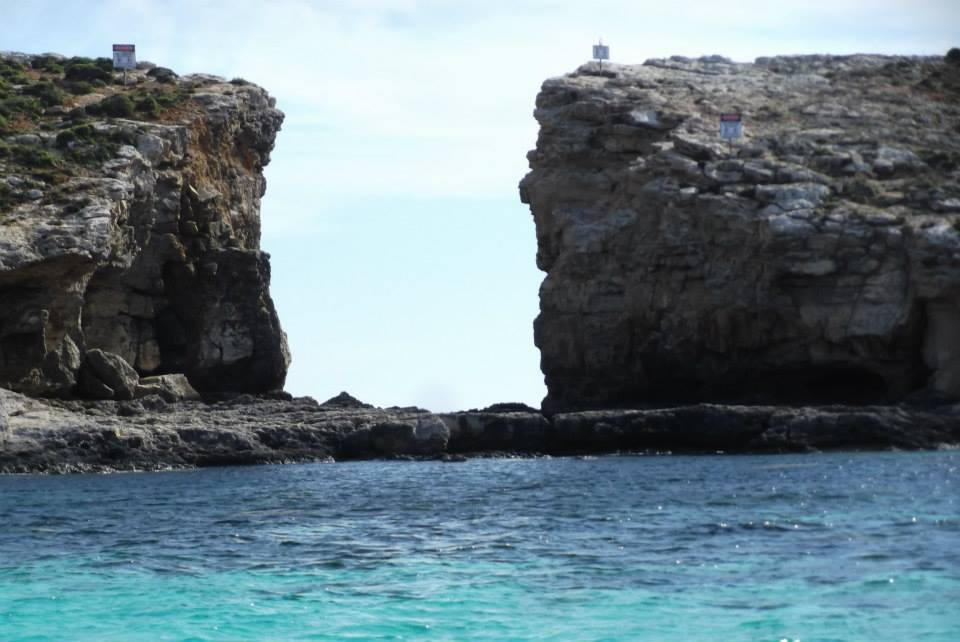
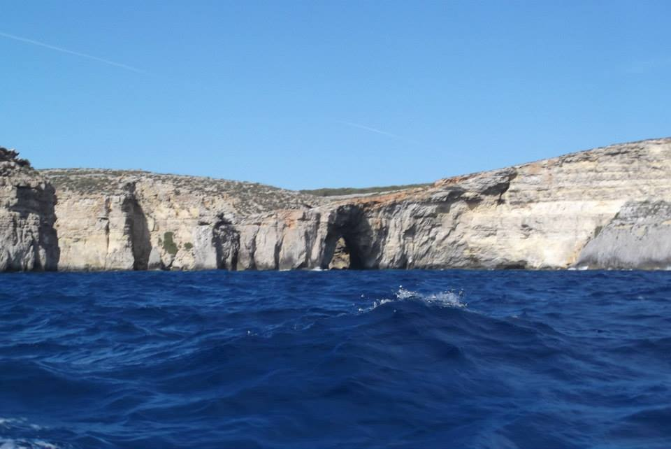
Disclosure: If you book through these links we may earn a small commission at no extra cost to you.
Common questions
What to pack for Malta
Malta is hot and sunny for most of the year — summer temperatures regularly exceed 30°C. Pack light, bring good sun protection and wear comfortable shoes for the cobbled streets of Valletta and Mdina. These are the things we'd bring without hesitation.
The Maltese sun is no joke — especially on boat trips to the Blue Lagoon and days spent exploring. High SPF is absolutely essential and you will go through more than you expect.
View on Amazon →Valletta and Mdina have narrow cobbled streets that are tough on your feet. Comfortable, supportive shoes are essential for getting the most out of the sightseeing days.
View on Amazon →Staying hydrated is crucial in the heat — especially on full days out on the island tour or over in Gozo. A reusable bottle saves money and keeps you going all day.
View on Amazon →Perfect for day trips to Gozo, boat trips to the Blue Lagoon and long days exploring. Light enough to carry everywhere without getting in the way.
View on Amazon →Essential for long days out in the Maltese sun — especially on boat trips and open-air sightseeing. A wide-brimmed hat makes a real difference to how comfortable you feel.
View on Amazon →Full days out taking photos and using maps will drain your battery fast. A power bank keeps you connected and means you never miss a moment.
View on Amazon →Handy for maps, bookings and staying connected without paying roaming charges — particularly useful on day trips to Gozo or out on the water.
View on Amazon →Malta uses Type G plugs — the same as the UK. Don't arrive on day one with nothing charged after your flight.
View on Amazon →Breathable and cool for the heat — and respectful when visiting Malta's many churches and religious sites, where covered legs are often required.
View on Amazon →Disclosure: These are Amazon affiliate links. If you buy through them we may earn a small commission at no extra cost to you. These are all things we'd genuinely pack for a Malta trip.
Malta is one of the Mediterranean's most underrated destinations — brilliant history, beautiful coastline, great weather and Gozo just a ferry hop away. Browse activities and experiences to make the most of every day.
Affiliate disclosure: if you book through our links we may earn a small commission at no cost to you. We only recommend trips and experiences we'd be happy to stand over.